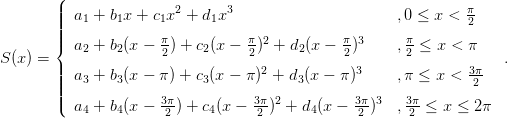
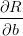
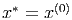
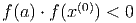
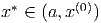
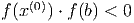

3.6 Critérios de parada
Quando usamos métodos iterativos precisamos determinar um critério de parada. A
Tabela 3.4 indica critérios de parada usuais para os métodos que estudamos neste
capítulo.


Tabela 3.4: Quadro comparativo.
|
|
|
|
| Método | Convergência | Erro | Critério de parada |
|
|
|
|
Bisseção | Linear |
ϵn+1 =  ϵ ϵ |
 < erro < erro |
| | (p = 1) | | |
| | | | |
| Iteração | Linear |
ϵn+1 ≈|ϕ′(x*)|ε
n |
 < erro < erro |
Δn < Δn-1 |
|
| linear | (p = 1) | | |
| | | | |
Newton | Quadrática |
ϵn+1 ≈  εn2 εn2 |
|Δn|< erro |
| | (p = 2) | | |
| | | | |
Secante | |
εn+1 | ≈ εnεn-1 εnεn-1 |
| ≈Mεnϕ |
|
|Δn|< erro |
| | | | |
| | | | |
| | | | |
|
|
|
|
| |


Observação 3.6.1. O erro na tabela sempre se refere ao erro absoluto esperado.
Nos três últimos métodos, é comum que se exija como critério de parada que a
condição seja satisfeita por alguns poucos passos consecutivos. Outros critérios
podem ser usados. No métodos das secantes, deve-se ter o cuidado de evitar
divisões por zero quando xn+1 - xn muito pequeno em relação à resolução do
sistema de numeração.
3.6.1 Exercícios
E 3.6.1. Refaça as questões 3.4.2, 3.4.3, 3.4.4 e 3.4.5, usando o método das
secantes.
E 3.6.2. Dê uma interpretação geométrica ao método das secantes. Qual a vantagem
do método das secantes sobre o método de Newton?
E 3.6.3. Aplique o método das secantes para resolver a equação
E 3.6.4. Refaça o problema 3.2.7 usando o método de Newton e das secantes.


E 3.6.5. Seja dada uma função f(x) duas vezes continuamente diferenciável. Faça
uma análise assintótica para mostrar que as iterações do método das secantes
satisfazem:
para aproximações iniciais x(1) e x(2) suficientemente próximas de x*, onde
f(x*) = 0.

